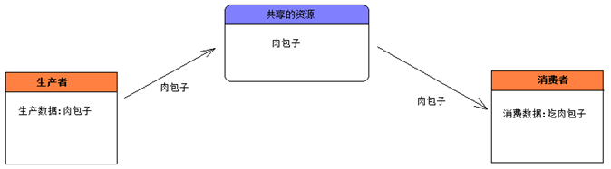

线程通信:不同的线程执行不同的任务,如果这些任务有某种关系,线程之间必须能够通信,协调完成工作.
经典的生产者和消费者案例(Producer/Consumer):
分析案例:
1):生产者和消费者应该操作共享的资源(实现方式来做).
2):使用一个或多个线程来表示生产者(Producer).
3):使用一个或多个线程来表示消费者(Consumer).
生产者消费者的示意图:

为什么生产者不直接把数据给消费者,而是先把数据存储到共享资源中,然后,消费者再从共享资源中取出数据,再消费.
在这里体现了面向对象的设计理念:低耦合.
高(紧)耦合: 直接使用生产者把肉包子给消费者,那么生产者中得存在消费者的引用,同理,消费者要消费生产者生产的肉包子,消费者中也得存在生产者对象的引用. 例子: 主板和集成显卡.
低(松)耦合:使用一个中间对象,屏蔽了生产者和消费者直接的数据交互. 例子:主板和独立显卡.
-----------------------------------------------------------------------------------------------------------------

分析生产者和消费者案例存在的问题:
建议在生产姓名和性别之间以及在打印之前使用Thread.sleep(10);使效果更明显.
此时出现下面的情况:
问题1:出现姓别紊乱的情况.
解决方案:只要保证在生产姓名和性别的过程保持同步,中间不能被消费者线程进来取走数据.
可以使用同步代码块/同步方法/Lock机制来保持同步性.
问题2:应该出现生产一个数据,消费一个数据.
应该交替出现: 春哥哥-男-->凤姐-女-->春哥哥-男-->凤姐-女.....
解决方案: 得使用 等待和唤醒机制.

同步锁池:
同步锁必须选择多个线程共同的资源对象.
当前生产者在生产数据的时候(先拥有同步锁),其他线程就在锁池中等待获取锁.
当线程执行完同步代码块的时候,就会释放同步锁,其他线程开始抢锁的使用权.
多个线程只有使用相同的一个对象的时候,多线程之间才有互斥效果.
我们把这个用来做互斥的对象称之为,同步监听对象/同步锁.
-------------------------------------
同步锁对象可以选择任意类型的对象即可,只需要保证多个线程使用的是相同锁对象即可.
-------------------------------------
因为,只有同步监听锁对象才能调用wait和notify方法,所以,wait和notify方法应该存在于Object类中,而不是Thread类中.
线程通信-wait和notify方法介绍:
java.lang.Object类提供类两类用于操作线程通信的方法.
wait():执行该方法的线程对象释放同步锁,JVM把该线程存放到等待池中,等待其他的线程唤醒该线程.
notify:执行该方法的线程唤醒在等待池中等待的任意一个线程,把线程转到锁池中等待.
notifyAll():执行该方法的线程唤醒在等待池中等待的所有的线程,把线程转到锁池中等待.
注意:上述方法只能被同步监听锁对象来调用,否则报错IllegalMonitorStateException..
------------------------------------------
假设A线程和B线程共同操作一个X对象(同步锁),A,B线程可以通过X对象的wait和notify方法来进行通信,流程如下:
1:当A线程执行X对象的同步方法时,A线程持有X对象的锁,B线程没有执行机会,B线程在X对象的锁池中等待.
2:A线程在同步方法中执行X.wait()方法时,A线程释放X对象的锁,进入A线程进入X对象的等待池中.
3:在X对象的锁池中等待锁的B线程获取X对象的锁,执行X的另一个同步方法.
4:B线程在同步方法中执行X.notify()方法时,JVM把A线程从X对象的等待池中移动到X对象的锁池中,等待获取锁.
5:B线程执行完同步方法,释放锁.A线程获得锁,继续执行同步方法.

线程通信-使用Lock和Condition接口:
wait和notify方法,只能被同步监听锁对象来调用,否则报错IllegalMonitorStateException.
那么现在问题来了,Lock机制根本就没有同步锁了,也就没有自动获取锁和自动释放锁的概念.
因为没有同步锁,所以Lock机制不能调用wait和notify方法.
解决方案:Java5中提供了Lock机制的同时提供了处理Lock机制的通信控制的Condition接口.
--------------------------------------------------------------------
从Java5开始,可以:
1):使用Lock机制取代synchronized 代码块和synchronized 方法.
2):使用Condition接口对象的await,signal,signalAll方法取代Object类中的wait,notify,notifyAll方法.


多线程通信的时候很容易造成死锁,死锁无法解决,只能避免:
当A线程等待由B线程持有的锁,而B线程正在等待A线程持有的锁时,发生死锁现象,JVM不检测也不试图避免这种情况,所以程序员必须保证不导致死锁.
避免死锁法则: 当多个线程都要访问共享的资源A,B,C时,保证每一个线程都按照相同的顺序去访问他们,比如都先访问A,接着B,最后C.
--------------------
哲学家吃面条的故事
--------------------
Thread类中过时的方法:
suspend():使正在运行的线程放弃CPU,暂停运行.
resume():是暂停的线程恢复运行.
--------------------
注意:因为容易导致死锁,所以已经被废弃了.
死锁情况:
A线程获得对象锁,正在执行一个同步方法,如果B线程调用A线程的suspend方法,此时A线程暂停运行,此时A线程放弃CPU,但是不会放弃占用的锁.
生命周期:一个事物从出生的那一刻开始到最终死亡中间的整个过程.
在事物的漫长的生命周期过程中,总会经历不同的状态(婴儿状态/青少年状态/中年状态/老年状态...).
线程也是有生命周期的,也是存在不同的状态的,状态相互之间的转换.


有人又把阻塞状态,等待状态,计时等待状态合称为阻塞状态.如下图.
---------------------------------------------------
线程对象的状态存放在Thread类的内部类(State)中:
注意:Thread.State类其实是一个枚举类.
因为线程对象的状态是固定的,只有6种,此时使用枚举来表示是最恰当的.

1:新建状态(new):使用new创建一个线程对象,仅仅在堆中分配内存空间,在调用start方法之前.
新建状态下,线程压根就没有启动,仅仅只是存在一个线程对象而已.
Thread t = new Thread();//此时t就属于新建状态
当新建状态下的线程对象调用了start方法,此时从新建状态进入可运行状态.
线程对象的start方法只能调用一次,否则报错:IllegalThreadStateException.
2:可运行状态(runnable):分成两种状态，ready和running。分别表示就绪状态和运行状态。
就绪状态:线程对象调用start方法之后,等待JVM的调度(此时该线程并没有运行).
运行状态:线程对象获得JVM调度,如果存在多个CPU,那么允许多个线程并行运行.

3:阻塞状态(blocked):正在运行的线程因为某些原因放弃CPU,暂时停止运行,就会进入阻塞状态.
此时JVM不会给线程分配CPU,直到线程重新进入就绪状态,才有机会转到运行状态.
阻塞状态只能先进入就绪状态,不能直接进入运行状态.
阻塞状态的两种情况:
1):当A线程处于运行过程时,试图获取同步锁时,却被B线程获取.此时JVM把当前A线程存到对象的锁池中,A线程进入阻塞状态.
2):当线程处于运行过程时,发出了IO请求时,此时进入阻塞状态.
4:等待状态(waiting)(等待状态只能被其他线程唤醒):此时使用的无参数的wait方法,
1):当线程处于运行过程时,调用了wait()方法,此时JVM把当前线程存在对象等待池中.
5:计时等待状态(timed waiting)(使用了带参数的wait方法或者sleep方法)
1):当线程处于运行过程时,调用了wait(long time)方法,此时JVM把当前线程存在对象等待池中.
2):当前线程执行了sleep(long time)方法.
6:终止状态(terminated):通常称为死亡状态，表示线程终止.
1):正常执行完run方法而退出(正常死亡).
2):遇到异常而退出(出现异常之后,程序就会中断)(意外死亡).
-------------------------------------------------------------------
线程一旦终止,就不能再重启启动,否则报错(IllegalThreadStateException).
在Thread类中过时的方法(因为存在线程安全问题,所以弃用了):
void suspend() :暂停当前线程
void resume() :恢复当前线程
void stop() :结束当前线程
线程休眠:让执行的线程暂停一段时间，进入计时等待状态。
方法:static void sleep(long millis)
调用sleep后，当前线程放弃CPU,在指定时间段之内，sleep所在线程不会获得执行的机会。
此状态下的线程不会释放同步锁/同步监听器.
该方法更多的用于模拟网络延迟,让多线程并发访问同一个资源的错误效果更明显.
在开发中也会故意使用该方法,如:

联合线程:
线程的join方法表示一个线程等待另一个线程完成后才执行。join方法被调用之后，线程对象处于阻塞状态。
有人也把这种方式称为联合线程，就是说把当前线程和当前线程所在的线程联合成一个线程。
后台线程：在后台运行的线程，其目的是为其他线程提供服务，也称为“守护线程"。JVM的垃圾回收线程就是典型的后台线程。
特点：若所有的前台线程都死亡，后台线程自动死亡,前台线程没有结束,后台线程是不会结束的。
测试线程对象是否为后台线程：使用thread.isDaemon()。
前台线程创建的线程默认是前台线程,可以通过setDaenon(true)方法设置为后台线程,并且当且仅当后台线程创建的新线程时，新线程是后台线程。
设置后台线程：thread.setDaemon(true),该方法必须在start方法调用前，否则出现IllegalThreadStateException异常。

线程优先级:
每个线程都有优先级，优先级的高低只和线程获得执行机会的次数多少有关,并非线程优先级越高的就一定先执行，哪个线程的先运行取决于CPU的调度。
MAX_PRIORITY=10,最高优先级
MIN_PRIORITY=1,最低优先级
NORM_PRIORITY=5,默认优先级
-----------------------
int getPriority() :返回线程的优先级。
void setPriority(int newPriority) : 更改线程的优先级。
-----------------------
每个线程都有默认优先级,主线程默认优先级为5,如果A线程创建了B线程,那么B线程和A线程具有相同优先级.
注意:不同的操作系统支持的线程优先级不同的,建议使用上述三个优先级,不要自定义.
线程礼让:
yield方法：表示当前线程对象提示调度器自己愿意让出CPU资源，但是调度器可以自由的忽略该提示。
调用该方法之后，线程对象进入就绪状态，所以完全有可能：某个线程调用了yield()之后，线程调度器又把它调度出来重新执行。
从Java7提供的文档上可以清楚的看出，开发中很少会使用到该方法，该方法主要用于调试或测试，它可能有助于因多线程竞争条件下的错误重现现象。
-----------------------------------------
sleep方法和yield方法的区别:
1):都能使当前处于运行状态的线程放弃CPU,把运行的机会给其他线程.
2):sleep方法会给其他线程运行机会,但是不考虑其他线程的优先级,yield方法只会给相同优先级或者更高优先级的线程运行的机会.
3):调用sleep方法后,线程进入计时等待状态,调用yield方法后,线程进入就绪状态.
在JDK的java.util包中提供了Timer类,可以定时执行特定的任务.
TimerTask类表示定时器执行的某一项任务.
常用方法:
schedule(TimerTask task,long delay,long period):
schedule(TimerTask task,long delay):
-----------------------------------------------------------------
ThreadGroup类表示线程组,可以对一组线程进行集中管理.
用户在创建线程对象时,可以通过构造器指定其所属的线程组.
Thread(ThreadGroup group,String name);
如果A线程创建了B线程,如果没有设置B线程的分组,那么B线程加入到A线程的线程组.
一旦线程加入某个线程组,该线程就一直存在于该线程组中直到线程死亡,不能在中途修改线程的分组.
------------------------
当Java程序运行时,JVM会创建名为main的线程组,在默认情况下,所有的线程都该改线程组下.
线程相关的知识点:
1):线程安全的集合对象(留到集合框架中去).
2):ThreadLocal:本地线程变量,ThreadLocal模式,大神班.
3):线程池,Java8堆线程池新增的功能.
4):Java5新增的线程并发操作.